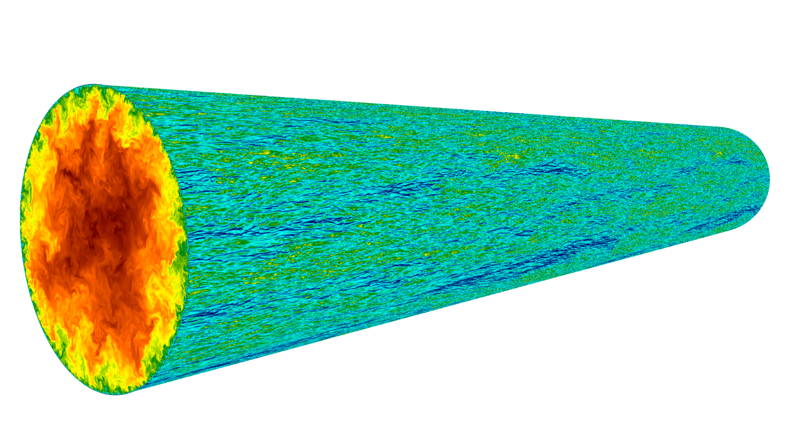

Instantaneous Flow Field (Reτ = 5197)

High-fidelity incompressible turbulent pipe flow spanning a wide range of friction Reynolds numbers.

Multiple high-fidelity direct numerical simulation cases of incompressible turbulent pipe flow are provided. The table summarizes the Reynolds numbers, grid resolution, near-wall spacing, azimuthal spacing, sampling duration, and plotting symbols for the listed cases.
| Reτ | Reb | Nz × Nr × Nθ | Δz+ | Δr+w | Δr+max | Δ(Rθ)+ |
|---|---|---|---|---|---|---|
| 181 | 5300 | 1024 × 192 × 256 | 5.5 | 0.02 | 2.0 | 4.4 |
| 549 | 19000 | 2048 × 256 × 768 | 8.4 | 0.09 | 3.2 | 4.5 |
| 998 | 37700 | 3072 × 384 × 1280 | 10.2 | 0.10 | 3.9 | 4.9 |
| 2001 | 83000 | 6144 × 768 × 2560 | 10.2 | 0.10 | 3.9 | 4.9 |
| 5197 | 240000 | 12288 × 1024 × 5120 | 12.8 | 0.20 | 8.6 | 6.3 |
Reτ: friction Reynolds number; Reb: bulk Reynolds number; Nz × Nr × Nθ: grid size in the streamwise, radial, and azimuthal directions; Δr+w: near-wall radial spacing; Δr+max: maximum radial spacing; Δ(Rθ)+: azimuthal spacing in wall units; T uτ/R: nondimensional sampling duration.